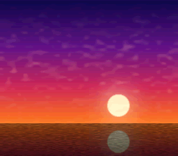

|
OpenSNES
Modern Open-Source SNES Development SDK
|
|
OpenSNES
Modern Open-Source SNES Development SDK
|

Port of krom (Peter Lemon)'s HiColor64PerTileRowPseudoHiRes (PeterLemon/SNES, PPU/HDMA/HiColor64PerTileRowPseudoHiRes) — the integration of the two surfaces the effects arc landed separately: hicolor_1792's per-scanline H-IRQ CGRAM stream runs UNDER videoSetPseudoHires(1). The 512×224 sunset (original art, aspect-corrected for half-width pixels) is split by column parity — odd columns on BG1 (main), even on BG2 (sub) — and the PPU re-interleaves them while the 64-color row palettes reload per scanline. Color math (ADD-half of the subscreen into BG1+backdrop, krom's CGWSEL $02 / CGADSUB $61) softens column fringing.
| Register | krom | this port |
|---|---|---|
| BGMODE | $09 (Mode 1, priority) | same (setMode(BG_MODE1, 0x08)) |
| SETINI | $08 (pseudo-hires) | same (videoSetPseudoHires(1)) |
| TM / TS | BG1 / BG2 | same |
| CGWSEL / CGADSUB | $02 / $61 | same (colorMathSetSource/Op/Half/Enable) |
| VRAM | BG1 $0000w, BG2 $4000w, shared map $3C00w+row4, VOFS 31 | same |
| IRQ stream | HTIME 190, 16 B/line, VBlank rewind | hicolor_1792's handler, verbatim |
Converter: devtools/hicolor64hires.py (krom's SNESBGPAL64tilerowHiRes.py contract — outputs committed).
console, dma, background, colormath